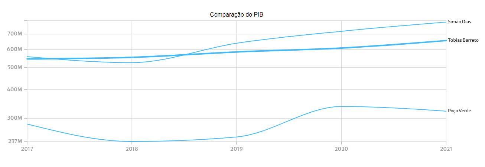

Blog Tobias
Blog Tobias @blogtobias
@blogtobias Blog Tobias
Blog TobiasECONOMIA – Preço da Gasolina explode no Brasil e atinge recordes em 2024!
Preço dos Combustíveis no Brasil Atinge Níveis Recordes em 2024.
Economia/ Governo do EstadoOs preços dos combustíveis no Brasil têm sido assunto de preocupação para motoristas e comunidades em 2024. O último levantamento de preços da Agência Nacional do Petróleo, Gás Natural e Biocombustíveis (ANP), divulgado em 24 de julho, revela aumentos expressivos nos valores da gasolina, etanol e diesel, em relação à semana anterior, causando impacto direto no bolso dos consumidores.
Dados fornecidos por Portal Tobiense - Adissandro Pinheiro, publicado 4 dias atrás.
Proprietários de motocicletas de até 165cc são insentos do IPVA 2025.
Economia/ Governo do EstadoA insenção foi aprovada pela lei 284/2024 do Poder Executivo estadual os proprietários de motocicletas de 50cc até 165 cilindradas serão insentos do Imposto sobre a Propriedade de Veículos Automotores (IPVA), a partir do calendário anual do IPVA 2025. A insenção foi aprovada pela lei 284/2024 do Poder Executivo estadual, em Assembleia Legislativa. Antes, o benefício era concedido para motos de até 150cc.
Dados fornecidos por Portal Tobiense - Adissandro Pinheiro, publicado 4 dias atrás.
Comércio exterior - Como funciona a relação com o comércio local no ano de 2024.
Exportação e Importação no Mundo
Tipo de operação - Importação/ Peso líquido em Kg/ Ano - 2024.No ano de 2024, os países que mais importaram produtos para Tobias Barreto foram Peru (9 de Kg (100%)). Segundo a tabela, é nítida a relação positiva entre esse país e o munícipio de Tobias Barreto.
Dados fornecidos por MDIC - Exportações e Importações por Município e Posição do Sistema Harmonizado (SH4).
Comparação - Exportação e Importação
Tipo de operação - Importação/ Peso líquido em Kg/Comparando aos munícipios de Simão Dias e Poço Verde.No ano de 2024, os países que mais importaram produtos para Tobias Barreto foram Peru (9 de Kg (100%)). Segundo a tabela, é nítida a relação positiva entre esse país e o munícipio de Tobias Barreto.
Dados fornecidos por MDIC - Exportações e Importações por Município e Posição do Sistema Harmonizado (SH4).
PIB - Como está a situação do Produto Interno Bruto (PIB) do município de Tobias Barreto.
PIB - Qual o PIB do município de Tobias?
Valor Adicionado Bruto a Preços Correntes / Última análise ano 2020.No ano de 2020, os setores com o maior PIB foram 45.2% em Administração, 44% em Serviços, e 6.43% em Indústria. Percebe-se que esses valores são apenas uma estimativa, próximo da realidade daquele momento.
Dados fornecidos por Instituto Brasileiro de Geografia e Estatística (IBGE).
Comparação histórica do VAB por setor
Todos os setores / Ano de 2017 ao 2021.Comparação anual do Valor Adicionado Bruto a Preços Correntes (VAB) por setor. Foi feita uma análise para verificar a situação do VAB em cada setor relacionado com o município de Tobias Barreto - SE.
Dados fornecidos por Instituto Brasileiro de Geografia e Estatística (IBGE).
Tendências do PIB
Comparação entre cidades/ municípios de Simão Dias e Poço Verde.O PIB Na cidade de Tobias Barreto em 2021 foi de 656M, o que representa uma variação de 108% em relação ao ano anterior.
Dados fornecidos por Instituto Brasileiro de Geografia e Estatística (IBGE).
